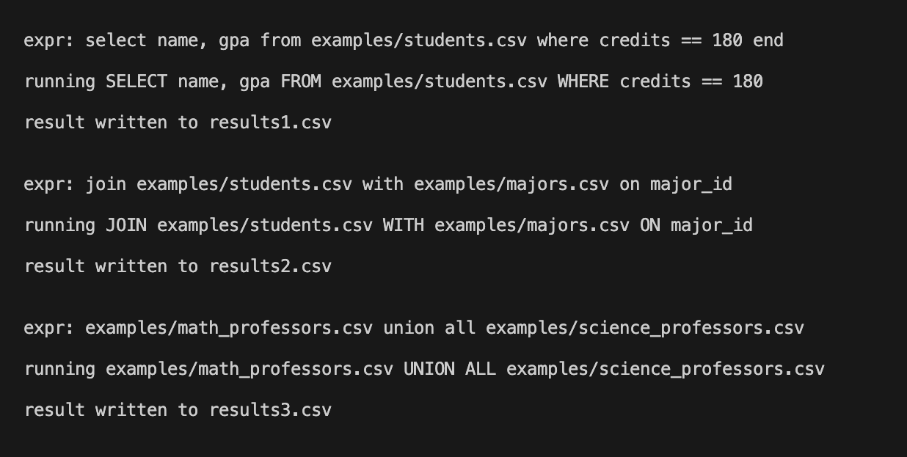
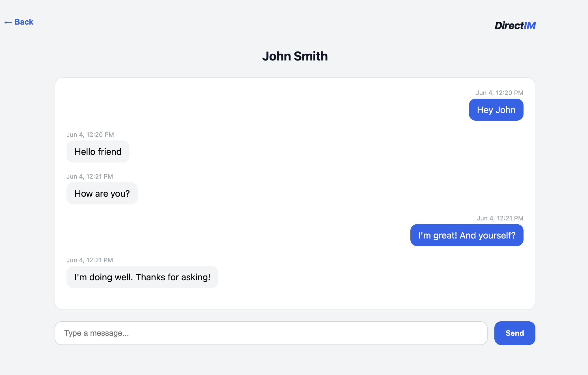

About Me
Hi, I’m Byron Griswold! Thank you for taking the time to look at my personal website. I am currently a student at Portland State University, pursuing a B.S. in Computer Science. I am building experience through coursework and project based learning. My interests include software development, web technologies, and database systems, and I am always working to learn more and further develop my skills.
Technical Skills & Experience
Software Engineering
Experience with project planning and development using Agile methods, along with service based application structure and client-server design.
Programming & Operating Systems
Experience with general-purpose programming in C++, C, and Python, along with operating system concepts such as Unix tools, concurrent programming, file systems, and shell scripting.
Web Development
Experience developing web applications using React, Vite, JavaScript, HTML, CSS, RESTful APIs, Axios, and real-time client-server communication using Socket.IO over WebSockets.
Database Management
Experience with SQL and PostgreSQL for designing, querying, and managing relational databases.
Automated Testing
Experience testing JavaScript applications using Jest and React Testing Library, as well as Python applications using pytest.
Projects
SQL-Style Query Language Interpreter

An interpreter written in Python for a small programming language with a SQL style domain-specific extension. The language includes core features such as let bindings, assignment, conditionals, functions, and sequencing. The SQL-style extension allows programs to query relational table data loaded from .csv files. CSV files are treated as table literals, and query results are written back out as .csv files. Supported operations include SELECT with WHERE, JOIN, UNION ALL, and INTERSECT. The implementation uses a Lark grammar, a parse-tree-to-AST transformer, and an evaluator that executes the AST to produce results.
React Instant Messaging App

The frontend for an instant messaging application built with JavaScript, React and Vite. It connects to a backend API and supports authentication, chat room management, real-time messaging, conversation history, and profile management. The application uses RESTful API requests for most client-server communication, Socket.IO for real-time messaging, and Jest with React Testing Library for unit and feature testing.